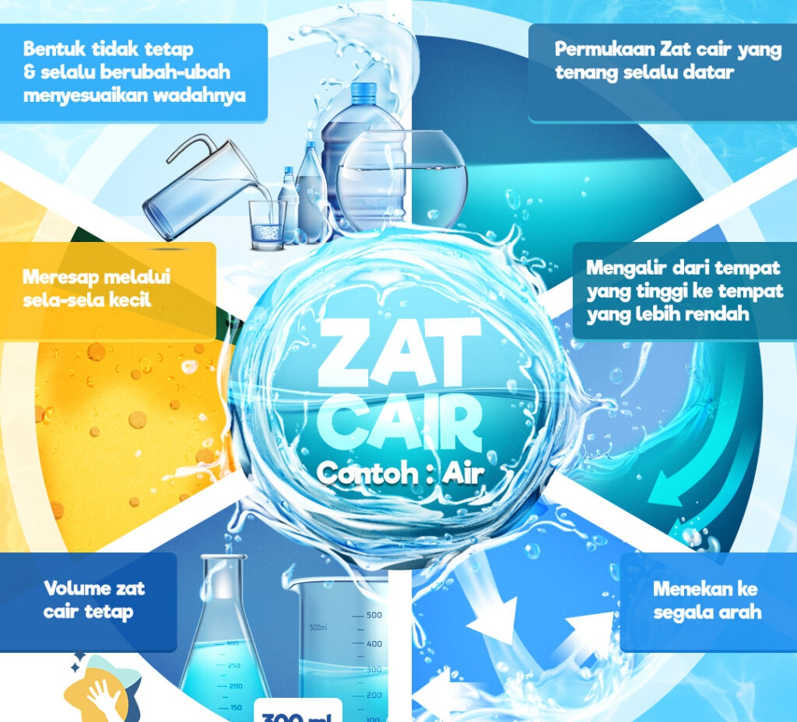
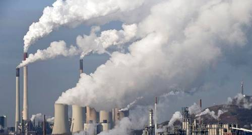
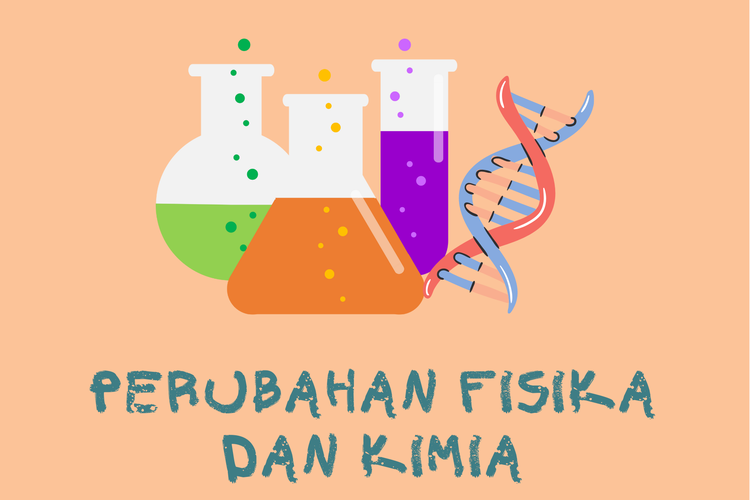

Selamat Datang di Website Kami
TERIMA KASIH TELAH BERKUNJUNG

Nama: Restu
kelas: X TKJ
A. ZAT DAN PERUBAHAN NYA
a.Zat Padat
b.Zat Cair
c.Zat Gas
jika males baca silakan tonton vidio nya
1. Zat Padat
Zat padat adalah salah satu dari tiga bentuk utama materi, selain cair dan gas. Dalam zat padat, partikel-partikel penyusunnya terkumpul rapat dan memiliki pola susunan yang teratur. Partikel ini dapat berupa atom, molekul, atau ion yang saling berikatan secara kuat. Karena partikel-partikelnya saling terkait dengan kuat, zat padat memiliki bentuk dan volume yang tetap, serta tidak mudah mengalir.
Ciri khas zat padat adalah keberadaan struktur kristal atau amorf. Dalam struktur kristal, partikel penyusunnya teratur membentuk pola yang berulang, sedangkan dalam struktur amorf, partikel tidak memiliki pola susunan yang teratur.
Contohnya:
Batu, logam, kayu, dan plastik
2. Zat Cair
Zat cair adalah salah satu bentuk materi yang memiliki kemampuan mengalir dan mengambil bentuk wadah yang mengandungnya. Dalam zat cair, partikel-partikel penyusunnya tetap saling terikat, tetapi tidak seketat seperti dalam zat padat. Partikel-partikel ini memiliki kebebasan relatif untuk bergerak, yang memungkinkan zat cair memiliki kemampuan mengalir dan mengambil bentuk wadahnya.
Ciri khas zat cair adalah bahwa ia tidak memiliki bentuk tetap seperti zat padat, tetapi ia dapat mengambil bentuk wadah yang mengandungnya. Zat cair juga memiliki volume yang tetap, seperti zat padat, sehingga tidak mudah terkompresi.
Contohnya:
Air, minyak, susu, dan alkohol
3. Zat Gas
Zat gas adalah bentuk materi yang memiliki karakteristik mengisi seluruh volume wadah yang mengandungnya dan tidak memiliki bentuk atau volume yang tetap. Dalam zat gas, partikel-partikel penyusunnya, seperti atom atau molekul, memiliki energi kinetik yang tinggi sehingga mereka dapat bergerak dengan bebas dalam semua arah.
Ciri khas zat gas adalah bahwa ia tidak memiliki bentuk atau volume tertentu. Zat gas dapat mengisi ruang kosong di dalam wadah tanpa memandang ukuran wadah tersebut. Sifat ini juga yang membuat zat gas dapat dengan mudah terkompresi, artinya dapat dikurangi volume dan menjadi lebih padat dengan meningkatkan tekanan.
Contohnya:
Oksigen, nitrogen, hidrogen, dan uap air
B. Perubahan KIMIA & FISIKA
a. Kimia
b. Fisika
Kimia
Kimia adalah cabang ilmu pengetahuan yang mempelajari komposisi, struktur, sifat, reaksi, dan transformasi materi. Ini melibatkan pemahaman tentang bagaimana atom dan molekul berinteraksi satu sama lain, membentuk senyawa kimia, dan mengalami perubahan melalui reaksi kimia. Kimia juga terkait dengan memahami sifat fisik dan kimia dari berbagai zat, serta aplikasi praktisnya dalam kehidupan sehari-hari dan berbagai industri.
Fisika
Fisika adalah cabang ilmu pengetahuan alam yang mempelajari sifat-sifat dasar materi, energi, ruang, waktu, dan interaksi di antara keduanya. Ini melibatkan pemahaman tentang hukum-hukum alam yang mengatur pergerakan benda, interaksi gaya, sifat gelombang, dan fenomena lainnya di alam semesta.
1. Perubahan Kimia
Perubahan kimia adalah transformasi zat-zat menjadi zat baru dengan sifat-sifat yang berbeda dari zat asalnya. Ini melibatkan pemutusan dan pembentukan ikatan kimia, menghasilkan perubahan dalam komposisi molekuler dan strukomposisi
Contohnya adalah pembakaran, fermentasi, dan reaksi oksidasi.
2. Perubahan Fisika
Perubahan fisika merujuk pada perubahan dalam sifat fisik suatu bahan tanpa mengubah komposisi kimianya. Ini melibatkan perubahan seperti bentuk, ukuran, fase (seperti padat, cair, atau gas), dan sifat-sifat fisik lainnya seperti massa dan volume.
Contoh perubahan fisika termasuk pelarutan gula dalam air, perubahan agregat dari es menjadi air, atau pemanasan sebuah benda sehingga memuai.
Kesimpulan
Pentingnya Pemanfaatan: Pemahaman tentang sifat-sifat zat dan perubahannya memiliki aplikasi luas dalam kehidupan sehari-hari, seperti dalam proses industri, pembuatan produk, pengolahan makanan, dan bidang ilmu pengetahuan lainnya.
Layanan Kami
- Layanan 1
- Layanan 2
- Layanan 3